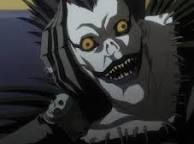

Oque é?
Death Note (デスノート Desu Nōto?, lit. "Caderno da Morte") é uma série de mangá escrita por Tsugumi Ohba e ilustrada por Takeshi Obata. Os capítulos do mangá foram serializados na revista semanal japonesa Weekly Shōnen Jump de 2003 até 2006, com os capítulos compilados em um total de 12 volumes tankōbon e lançados pela editora Shueisha. No Brasil, a série de mangá foi licenciada publicada em duas versões pela editora JBC, que também lançou as duas light novels da série. Em Portugal, o mangá foi licenciado pela Viz Media Europa e publicado pela Editora Devir. A história centra-se em Light Yagami, um estudante do ensino médio que descobre um caderno sobrenatural chamado Death Note, no qual pode matar pessoas se os nomes forem escritos nele enquanto o portador visualizar mentalmente o rosto de alguém que quer assassinar. A partir daí Light tenta eliminar todos os criminosos e criar um mundo onde não exista o mal, mas seus planos são contrariados por L, um famoso detetive particular. O sucesso do mangá levou a vários produtos relacionados. A história do mangá foi adaptada em uma série de televisão de anime produzida pela Madhouse e dirigida por Tetsurō Araki, composta de 37 episódios. O anime foi exibido no Japão de 3 de outubro de 2006 até 26 de junho de 2007 pela Nippon Television. O anime foi exibido no Brasil pela primeira vez em 2009 pelo Animax, e mais tarde reexibido em 2014 pela PlayTV, e posteriormente pela Netflix. Também foi exibido no canal Warner Channel, através do bloco Wanimé. Em Portugal foi exibido pelo Animax e pela SIC Radical. Além disso, a obra foi adaptada em três filmes live-action, incluindo um quarto filme em 2016 e uma adaptação norte-americana distribuída pela Netflix em 2017, um dorama, duas light novels e vários jogos eletrônicos criados pela Konami para o Nintendo DS.
Historia
Light Yagami é um estudante da cidade de Tóquio, no Japão. Um dia, sua vida sofre uma mudança radical, quando ele está entediado, encontra um estranho caderno sobrenatural chamado "Death Note", caído no chão. Dentro do caderno havia instruções sobre sua utilização, onde dizia que se escrevesse o nome de uma pessoa e visualizasse mentalmente o rosto desta, ela morreria de um ataque cardíaco em 40 segundos (se acaso a morte não for especificada). No início, Light desconfiava da autenticidade do caderno, mas depois de testá-lo em duas ocasiões, ele percebe que seu poder era verdadeiro. Depois de cinco dias, ele é visitado pelo verdadeiro proprietário do Death Note, um shinigami chamado Ryuk, que conta que ele tinha deixado cair o caderno na Terra porque estava entediado, e Light, então, lhe diz que o seu objetivo era matar todos os criminosos, a fim de purificar o mundo do mal e tornar-se o "deus do novo mundo". Mais tarde, o número de mortes inexplicáveis dos criminosos chama a atenção do FBI e de um famoso detetive particular conhecido como "L". L deduz rapidamente que o assassino em série — apelidado pelo público como "Kira" (キラ? derivado da pronúncia típica japonesa da palavra inglesa "killer", lit. "assassino") — estava no Japão. Também percebe que Kira poderia matar pessoas sem a necessidade de colocar um dedo nelas. Light descobre que L será um de seus maiores rivais, a partir desse momento, começa um jogo psicológico entre eles. Misa Amane, uma ídolo japonesa famosa portadora de um Death Note, no qual lhe foi entregue por Rem; se encontra com Light. Misa ficou obcecada por Kira depois que ele matou o assassino de seus pais, pelo modo que se dedica a ajudar Light, fazendo se passar pelo "segundo Kira", até ser capturada e presa por L, já que ele suspeitava dela. Light traça um plano para renunciar a posse dos Death Notes — tanto o seu como o de Misa — e, portanto, perder suas lembranças destes para poder resgatá-la. Depois de perder suas lembranças, Light é liberado para começar a investigar com L sobre um grupo de executivos chamados "Yotsuba", que possuía o Death Note de Misa. Para parar-los, Light recupera todas as suas lembranças no momento em que toca no Death Note. Rem, sendo manipulado por Light para que atue a seu favor, mata L e seu assistente, Watari. Uma vez que viola uma das regras do Death Note, Rem morre logo depois, aumentando o tempo de vida de Misa. Após a morte de L, Light assume como o "novo L" no grupo de investigação. Cinco anos mais tarde, aparecem Near e Mello, os verdadeiros sucessores de L, que se dividem para ver quem pegará Kira primeiro. Near, com ajuda do governo, cria a SPK, uma organização fundada com o objetivo explícito de capturar Kira. Enquanto que Mello faz um acordo com a máfia para conseguir o mesmo objetivo. Mello começa a executar seu plano e a investigar sobre os poderes do Death Note e Near — se fazendo passar por L — se comunica com Light, que também se passa por L. Light não esperava que L tivesse sucessores, de modo que terá que escapar novamente das deduções deles e assim, cumprir suas ambições. Posteriormente, Light decide procurar uma pessoa para substituí-lo por um tempo em seu trabalho como Kira, já que Near estava começando a suspeitar de que ele e Misa já não lhes servia. Assim, escolhe Teru Mikami, um homem que admirava Kira como um deus. Mello, com a ajuda de seu amigo Matt, sequestra Kiyomi Takada, que era namorada de Light na universidade, mas que depois Light a utiliza para completar seus planos. Matt morre metralhado após a perseguição dos guarda-costas de Takada, proporcionando uma oportunidade de fuga a Mello. No entanto, ele é morto por Takada, que possuía um pedaço de Death Note, mas depois Takada é assassinada por Light. Por outro lado, Near faz contato com Light e sua equipe para realizar uma reunião. Light aproveita a oportunidade para comunicar a Mikami que investigue sobre os verdadeiros nomes dos membros da SPK. Quando o dia da reunião chega, Mikami escreve os nomes dos membros da SPK em seu Death Note, mas Near explica que nada iria acontecer, porque com a ajuda de Stephen Gevanni, ele havia trocado esse caderno por um falso. Light, ao sentir-se encurralado pelas deduções de Near, revela que tudo era verdade e tenta matá-lo com um pedaço de Death Note que estava no seu relógio. No entanto, Matsuda — um dos agentes do caso Kira — dispara contra ele, o ferindo gravemente. Mikami se suicida porque Light havia sido derrotado e aproveitando o momento em que escapa, Light passa a se lembrar de tudo o que viveu. No final, Ryuk escreve o nome de Light Yagami em seu Death Note e ele morre.
Personagens
-
Light Yagami

-
Ryuk
 -
L Lawliet
-
Misa Amane

-
Near
-
Mello